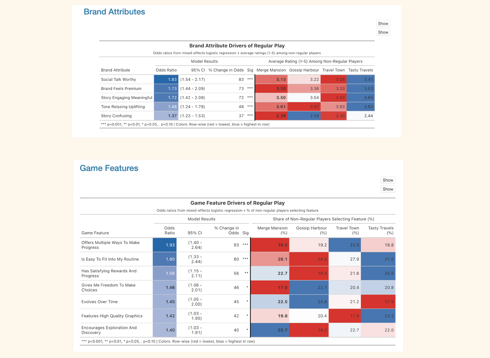

The challenge
Merge Mansion has strong awareness but players don't stick. Marketing wanted the brand refresh grounded in evidence about what actually drives players.
Case 02 · Metacore Games
Merge Mansion was planning a brand refresh and wanted it grounded in evidence and not just instinct. The deeper question underneath: it has strong awareness, so why doesn't that translate into players who stick?
Merge Mansion has strong awareness but players don't stick. Marketing wanted the brand refresh grounded in evidence about what actually drives players.
A competitive brand and game health survey of US female mobile gamers, analysed with a GLMM (logit link) that modelled which attributes actually move players to regular play, not just which score well.
Became the evidence base for the brand refresh, now positioned by leadership as central to long-term growth. The progression-flexibility finding feeds the game modernisation initiative.

The problem isn't that players don't try Merge Mansion.
They try it and don't stick.
The full story
The summary above is the skim. Each section expands for the detail.
Merge Mansion was planning a brand refresh, and the team wanted it grounded in evidence about what actually drives players, not just instinct. The deeper question underneath it: Merge Mansion has strong awareness, so why doesn't that translate into players who stick?
I scoped a competitive brand and game health study to find out which brand and gameplay attributes build lasting player connections, and where Merge Mansion stands against its main competitors.
I led the study end to end, from framing the research goals through to the readout that informed the brand refresh. I worked closely with Marketing, who owned the brand refresh decision this research was feeding, and partnered with a Data Scientist on the modelling. I authored the study.
A quantitative survey of US female mobile gamers aged 25 to 59, large enough to compare Merge Mansion against three direct competitors (Gossip Harbour, Travel Town, Tasty Travels) across the full brand funnel: awareness, consideration, trial, and regular play. The survey carried a Likert attribute battery covering story, tone, visual identity, motivation to play, and gameplay attributes.
The analytical core was a Generalised Linear Mixed Model (GLMM with a logit link), which let us model the odds of a player becoming a regular player as a function of how they rated each attribute, while correcting for the fact that respondents rated multiple games. Rather than just describing which attributes scored high, this told us which attributes actually move players to regular play, expressed as odds ratios.
I brought the question and what I needed the analysis to answer, and worked with the Data Scientist to explore the options. He selected the GLMM as the right fit. This meant we could separate which attributes genuinely drive regular play from what just scores well in a survey.
Merge Mansion has the highest aided awareness of the four games but the lowest regular-play conversion. One competitor shows the inverse pattern: modest awareness converting into strong regular play. So the problem isn't that players don't try Merge Mansion, it's that they try it and don't stick.
The model identified the attributes that actually drive regular play. On the brand side: being fun to talk about, feeling premium, feeling emotionally engaging, and a light, uplifting tone. On the gameplay side: multiple ways to make progress (the single strongest predictor), fitting into a routine, satisfying rewards, and player agency. Merge Mansion underperformed competitors on nearly all of these high-impact attributes, while its real strengths (clear storytelling, uncluttered visuals) turned out to be lower-leverage for conversion.
Two findings gave the team clearer evidence for questions they were already weighing. First, progression flexibility, not difficulty, is the binding constraint on retention, which explained why an earlier difficulty-rebalancing experiment hadn't moved satisfaction. Second, mystery, Merge Mansion's historical brand signature, underperformed competitors, but the read was sharper execution rather than repositioning, since strong mystery plausibly generates the talkability and emotional pull that do drive regular play.
The measured attributes explained only about 15% of the retention gap. I flagged this directly in the readout rather than overselling the model, and framed the rest (likely pacing, monetisation, energy economy, late-game depth) as a clear agenda for follow-up research rather than a settled answer.
The study became the evidence base for Merge Mansion's brand refresh. I helped translate the findings into a focused set of brand recommendations: re-anchoring the brand around its most distinctive and emotionally resonant assets, sharpening the premium and mystery cues the model tied to regular play, and replacing generic positioning language with more ownable, specific terms.
Throughout, I grounded individual refresh decisions in evidence, connecting them back to this study and related research so the brand direction rested on player insight rather than instinct. The work was positioned as a strategic priority rather than a cosmetic update, treating the brand as a core business asset. On the gameplay side, the progression-flexibility finding is now feeding into the game modernisation initiative as a design priority.